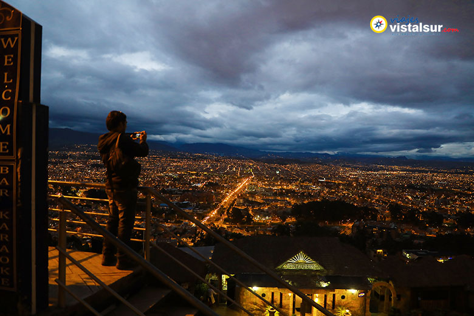
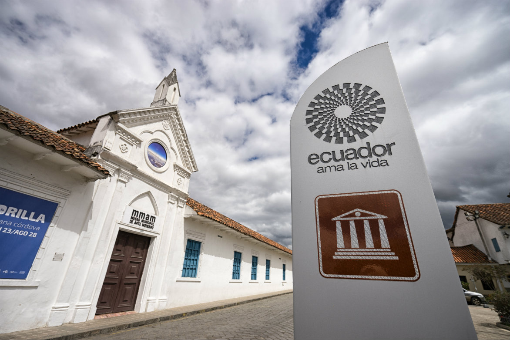

La Catedral de la Inmaculada Concepción,
también conocida como Catedral Nueva,
es una iglesia católica de estilo gótico,
románico y renacentista. Posee tres
cúpulas que sobresalen del tejado y estuvo
inspirada en la Basílica de San Pedro en
Roma. Es el símbolo religioso más
representativo de la ciudad y está ubicada
frente a la plaza central. Esta catedral
puede ser divisada desde todos los ángulos
de Cuenca. Una vez en su interior, puedes
subir los 150 escalones en forma espiral
hasta la terraza de la Catedral Nueva y
disfrutar de una estupenda vista.
¿Qué hacer en la catedral?
Puedes empezar subiendo a las cúpulas de la catedral, tendras un camino muy emocionante y tendrás una
increíble vista panorámica de la ciudad.
También puedes visitar en el subterráneo las catacumbas de la Catedral de la Inmaculada, están abiertas al
turismo desde el año pasado. La entrada cuesta USD 1 y personas de la tercera edad y niños pagan 50
centavos.
Un dato curioso es también están enterradas las llamadas hermanas domésticas, que vivía en el convento y
servían a las religiosas. La entrada cuesta USD 1,50 y USD 2.
Te lo muestro aquí
Mirador de Turi

El mirador de Turi es un mirador
panorámico del río Tomebamba. Turi es el
nombre de una parroquia cuencana, que
“proviene del vocablo indígena kuri, que
significa oro”. El mirador está localizado a
10 minutos de la ciudad, y desde allí se
pueden disfrutar de impresionantes vistas
panorámicas de la ciudad de Cuenca.
En este sector, es posible visitar Aventuri,
un parque en el cual podrás columpiarte al
tiempo en que tendrás un barranco a tus
pies.
¿Qué hacer en el Turi?
Aventuri: El parque mirador extremo denominado Aventuri, está situado a 2.700 metros sobre el nivel del
mar, existe camineras entre los árboles, tarabitas, cuerda floja y también columpios, entre los cuales
sobresale uno enclavado entre 2 árboles. Es una silla sujeta con 4 cables de metal en el que se puede mirar la
ciudad, mientras a los pies de los visitantes está un barranco de aproximadamente 500 metros de
profundidad
Mirador: Tiene una vista panorámica y única que permite observar a la ciudad en todo su esplendor, este
lugar es una parada obligada para los turistas nacionales y extranjeros; es conocido como 5el balcón de
Cuenca”
Iglesia de Turi: Esta parroquia alberga a una pequeña pero muy vistosa iglesia que lleva el nombre de Nuestra
Señora de la Merced de Turi, su construcción fue en el año de 1923, tiene una arquitectura realizada con
adobe en sus paredes, mientras que sus cúpulas fueron realizadas con ladrillo y cal
Te lo muestro en 1 minuto
El Museo de Arte Moderno

El barrio de San Sebastián, es
precisamente donde se encuentra el
Museo de Arte Moderno. Este
impresionante museo cuenta con su
exposición permanente de arte
contemporáneo, así como con
exposiciones temporales, de artistas
nacionales y extranjeros. En este museo, se
exhiben también las obras de la Bienal
Internacional de Pintura, ya que es su sede.
El horario de atención es de 09h00 a
17h00 de lunes a viernes, y sábados y
domingos de 09h00 a 13h00
¿Qué hacer en el el museo de arte moderno?
Apreciar el arte moderno expresado en cada escultura dentro del museo.
Tomarte fotos en la pasarela de colores es una actividad que no debes perderte al ingresar en el museo, todos
los turistas y residentes lo hacen por sus colores muy llamativos.
También puedes tomarte un café a los alrededores del museo, una cerveza mientras lees un libro en el parque
que está justo al frente del museo de arte moderno al igual que cafeterías y bares
Al momento sus fondos artísticos ascienden a 310 pinturas de gran calidad estética, 25 esculturas, 23 obras
pictóricas que corresponden a los premios de las diferentes ediciones de la Bienal de Pintura y 60 obras
infantiles. Estos logros hacen del Museo de Arte Moderno, un Centro de reconocido prestigio en la difusión y
promoción del Arte Contemporáneo.